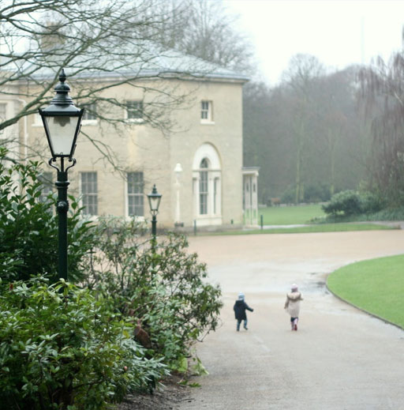
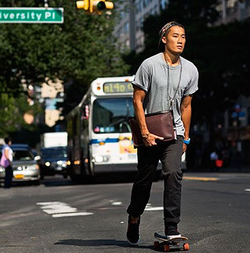

	
<div class="hero">
	
	<div class="hero-content">
		
		<h2 class="hero">David's<br>day</h2>
		
		<a href="tom.html" class="button">View now</a>
			
	</div>
		
	
		
</div>
				
<section class="previous-days top-day">
				
	<div class="prev-image">
						
		
			
	</div>
		
	<div class="item older last">
						
		<h2 class="dark">Camilla's day</h2><hr style="border-bottom: 1px #3c3c3c solid">
						
		<p style="color: #3c3c3c">From cycling through Stoke Newington to walking on the Heath, this is Camilla's day</p>
			
	</div>
	
</section>

<section class="previous-days">
		
	<div class="item older last">
						
		<h2 class="dark">Manlio's Day</h2><hr style="border-bottom: 1px #3c3c3c solid">
						
		<p style="color: #3c3c3c">From cycling through Stoke Newington to walking on the Heath, this is Camilla's day</p>
			
	</div>
	
	<div class="prev-image">
						
		
			
	</div>
	
</section>
	
</div>